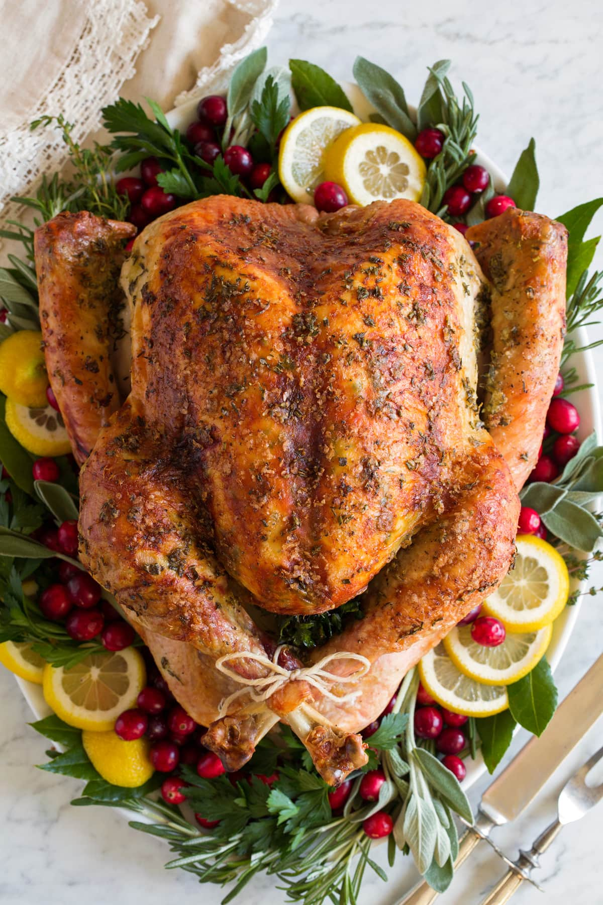

Roast Turkey

Description:
This Roast Turkey recipe is a holiday staple! Made with a fresh or frozen and thawed turkey, lots of rich butter, fresh herbs, a hint of bright lemon, and flavorful onion and garlic. It’s easy to prepare and it’s sure to impress family and friends!
Ingredients:
- 1/4 pound (1 stick) unsalted butter
- 1 lemon, zested and juiced
- 1 teaspoon chopped fresh thyme leaves
- 1 fresh turkey (10 to 12 pounds)
- Kosher salt
- Freshly ground black pepper
- 1 large bunch fresh thyme
- 1 whole lemon, halved
- 1 Spanish onion, quartered
- 1 head garlic, halved crosswise
Steps:
- Preheat the oven to 350 degrees F.
- Melt the butter in a small saucepan. Add the zest and juice of the lemon and 1 teaspoon of thyme leaves to the butter mixture. Set aside.
- Take the giblets out of the turkey and wash the turkey inside and out. Remove any excess fat and leftover pinfeathers and pat the outside dry. Place the turkey in a large roasting pan. Liberally salt and pepper the inside of the turkey cavity. Stuff the cavity with the bunch of thyme, halved lemon, quartered onion, and the garlic. Brush the outside of the turkey with the butter mixture and sprinkle with salt and pepper. Tie the legs together with string and tuck the wing tips under the body of the turkey.
- Roast the turkey about 2 1/2 hours, or until the juices run clear when you cut between the leg and the thigh. Remove the turkey to a cutting board and cover with aluminum foil; let rest for 20 minutes.
- Slice the turkey and serve.